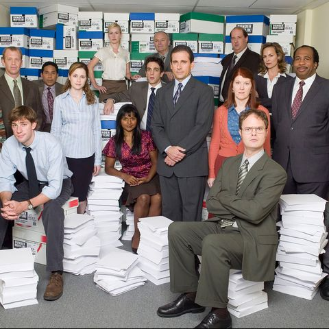

<DOCTYPE html> 
    </html>
    <head>
        <title> Favorite TV show  </title>
        <link rel="stylesheet" href="stylesheet.css">
    </head>
 
    <body>
        <header>
          <nav>
            <ul>
                <li><a href= "home.html">Main page</a></li>
                <li><a href="Best Episodes.html">Best Episodes</a></li>
                <li><a href="Actors.html">Characters</a></li>
                <li><a href="Awards.html">Awards</a></li>
  
                </ul>
          </nav>
        </header>
        </body>
        <h1>THE OFFICE</h1>
        <p1> The Office is a mockumentary, meaning that the characters speack directly to the audience through the camera. It makes the show feel more realistic. It is based on everyday work lives of office employees that work in a company called Dunder Mifflin paper company in Scranton, Pennsylvania. The show aired on NBC from March 24, 2005 to May 16-2013, with a total of nine seasons.  </p1>
        
            
       
    
    </html>